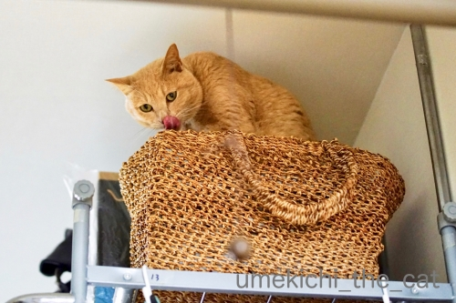
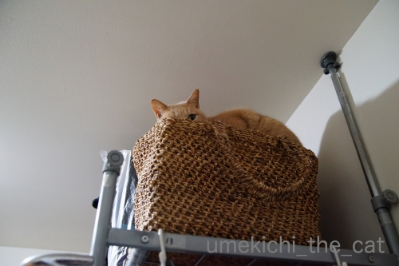
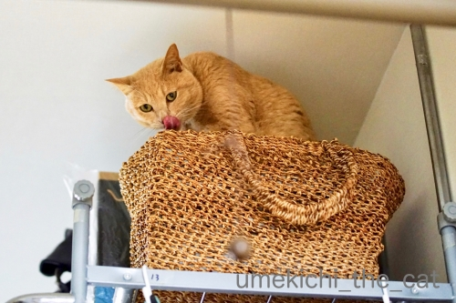
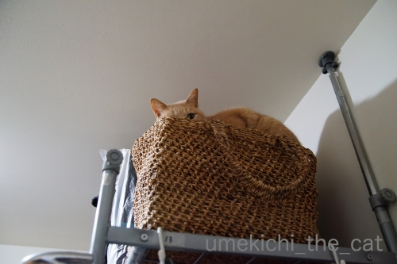

それでもていていしたいっ！ [梅吉]
梅吉さんの最近のお気に入りのベッドはたか〜いところ。

![[猫]](https://blog.ss-blog.jp/_images_e/101.gif) なんやねん
なんやねん

ついてこんといてや
ハンガーラックの上に置いてある買い物カゴの中。
涼しい部屋だし下僕にちょっかい出されずにゆっくり眠れますw
ぱぁ〜と開いた足の指の間に下僕が指を突っ込んで来る心配もありません(｡-_-｡)

寝る気満々です！
が、誘うと付き合ってくれるのが梅吉の良いところ＾＾
（26秒です＾＾音が出ますよ。）
指をわしゃわしゃするとすぐに誘われちゃいます(⌒-⌒;
結構垂直になるんですが足を踏み外したことは一度もありません。
私も受け止める気満々で足を踏ん張りながら遊んでますよー。

気が済んだらこんな風にお休みです。
カゴの中に箱が入っているのでこんな風にいつも三角耳が見えてるのがツボですwww
 ↑ガブッと一押し↑
↑ガブッと一押し↑

ハンガーラックの上に置いてある買い物カゴの中。
涼しい部屋だし下僕にちょっかい出されずにゆっくり眠れますw
ぱぁ〜と開いた足の指の間に下僕が指を突っ込んで来る心配もありません(｡-_-｡)
寝る気満々です！
が、誘うと付き合ってくれるのが梅吉の良いところ＾＾
（26秒です＾＾音が出ますよ。）
指をわしゃわしゃするとすぐに誘われちゃいます(⌒-⌒;
結構垂直になるんですが足を踏み外したことは一度もありません。
私も受け止める気満々で足を踏ん張りながら遊んでますよー。

気が済んだらこんな風にお休みです。
カゴの中に箱が入っているのでこんな風にいつも三角耳が見えてるのがツボですwww
2019-05-23 00:00
nice!(82)
コメント(30)

カフェオレ色の梅吉

梅吉 2023年8月10日 永眠


梅吉と出会った譲渡会

犬猫の理由なき殺処分ゼロ
妄想広告
UMEKICHI 光

爆発的に早い！
時々攻撃的！
Thanks to Mr.Boss365
爆発的に早い！
時々攻撃的！
Thanks to Mr.Boss365

高い所だと誰にも邪魔されずに寝られていいニャ。
と思ったら、邪魔者が（ﾟ□ﾟ）
お誘いは断らないんだニャw
by 英ちゃん (2019-05-23 01:03)
梅吉さん嬉しそう。目を輝かせて応じるところのお顔はまだ子猫ちゃんですねー。この籠は自分以外は入れない秘密基地みたいなものでしょう。
by zombiekong (2019-05-23 01:04)
高いところにいる時って、どうだーー！ってお顔しませんか〜？
それより、あー、邪魔者いなくてせいせいって感じなのかしら。
でも、遊びに付き合ってくれる梅吉さんはやさしい！
by ChatBleu (2019-05-23 06:48)
梅吉さん楽しそう^^イキイキしてますね。
by ニコニコファイト (2019-05-23 06:49)
高い所だと邪魔されずに寝れちゃいますね！
梅吉さん、良い場所を見つけたね(^^)
by ma2ma2 (2019-05-23 06:49)
ジャレジャレ〜〜楽しそうですね(^^)
by チャー (2019-05-23 07:01)
「遊んでやってる」って感じもします＾＾；
by ぽちの輔 (2019-05-23 07:20)
梅吉さんが入りやすいように、
三角お耳が見えるように、工夫されているような！
優しいですね。
ちぃさんのお誘いは梅吉さんは断りません！（笑）
遊んでやろ〜ぅ書いって（笑）
by kiki (2019-05-23 08:45)
動画見ました！
なんかめっちゃ楽しそう〜(^｡^)
その様子を撮影するのも大変そうですが(^_^;)
by よーちゃん (2019-05-23 10:45)
こんにちは。
梅吉君、同色の買い物カゴも良いですね。
そのまま、お出掛け出来そうな感じ（笑）
動画楽しそう！！これだけ反応してくれると「やり甲斐」あります。
無理な体勢ですが、お仕事上手な梅吉君ですね。
地震の時は落下しそう？お気を付け下さい！？(=^･ｪ･^=)
by Boss365 (2019-05-23 11:38)
保護色の籠の上から参画耳がのぞいていたら
じっとしてはいられませんね。
ちょっかいかけたい衝動は抑えきれません(笑
眠くてもちゃんと付き合ってくれる梅吉愛を感じました。
Naoちゃんも付き合ってくれますが爪を切っていないので
指に爪が刺さり数日間いたたたた生活になります。
by marimo (2019-05-23 11:57)
「下僕にちょっかい出されずにゆっくり眠れる」こてつもおそらく同じ気持ちでハンモックで寝るのを好みます(^▽^;)
お顔が見えないのは寂しいけれど、三角耳がチョコンと出ている風景も大好き！
梅吉さん、猫手でチョイチョイ、やっぱり優しい～♪
ウチのはじ～っと見つめて一発ばふっ！で私の指を仕留めに来ます。
構ってほしい下僕がいるお家の家猫さんは苦労が絶えません？！(≧▽≦)
by ゆきち (2019-05-23 12:33)
ここだと下僕にいじられずに済みますもんね(≧ω≦)
うちもそう思っているかもですーー＾＾
ちょいちょいお手手だしてくれるなんてかわいいー❤
まだまだお若いですね♪
うちはシニアではありますが、心は６ヵ月なので
まだまだ反応しますよ(笑)
姿がすっぽり隠れず、あ、ここにいるなって見えると
安心だし、ニヤっとしちゃいますよね(*´艸｀*)
by カトリーヌ (2019-05-23 16:21)
かまって欲しい時とそうでない時のスイッチが、にゃんこの魅力ですね！
ガブッといっときます。^ ^
by 小松達也 (2019-05-23 17:14)
最後にカゴに戻っちゃうところが可愛いです。
面白いです(^ω^)
by あとりえＳＡＫＡＮＡ (2019-05-23 17:34)
寝ようとしつつも、ちゃんとお母さんと遊んであげる
梅吉さんってば優しい良い子ですねぇ=(^.^)=
うちのニャンズは寝ようとしてる時に、
ちょっかいを出すと「うるさいなぁ( *｀ω´)」って
向きを変えて耳を隠して寝ます(´･_･`)
そして私はかみさんにも怒られます( T_T)→、それでニャンズが起きたら
かみさんが相手しないといけなくなるので(ｰ ｰ;)
by ニッキー (2019-05-23 20:29)
落ちないか心配でしたが、大丈夫の様で安心しました。
梅吉さんの「なんやねん」が良いですね。
「なんやねん」は毎日、ユキがしてくれます。
嬉しいような、悲しいような。そんな毎日を過ごしています＾＾
by riverwalk (2019-05-23 20:45)
高い場所の籠とくれば、猫さんにとってはパラダイスですよね。最後は余裕でお休みしている所が梅吉さんらしいですね(^_^)
by kou (2019-05-23 21:38)
上からていていが可愛い！楽しそう♪
動画を拝見し、ついニヤニヤしてしまいました。^^;
by yes_hama (2019-05-23 21:43)
きゃあ、可愛い～！
うめ吉さん、なんや？のお顔＾＾
真下に向かって手を伸ばしてていていっ！
付き合いいいですね～寝ることにしても、三角耳が見えてるよ♪
by sana (2019-05-24 00:19)
指のわしゃわしゃに誘われて
出て来る梅吉さんがたまらないほど
可愛いですねぇ～(#^.^#)
この姿を見たいがために
毎回、わしゃわしゃしちゃいますね♪
by きぃ (2019-05-24 09:32)
ニャンコがあ～～～～っと大きな口開けたときの顔は怖いですね。
by 旅爺さん (2019-05-24 16:59)
動画可愛いっす（＾＾）
by (。・_・。)２ｋ (2019-05-24 18:25)
いいなぁわしゃわしゃしたら来るんですね～♪うちは来てくれる時と「お前何しとんねん」って遠い目で見られる時と2パターンです(≧▽≦)
by palpal (2019-05-24 20:42)
高いところのカゴベッドいいですね！
付き合いいいな〜ノリノリですね！お目目まんまる*^^*
そして下僕はひっそりと立ち眩んでいたりして？（笑）
by Ja-Kou66 (2019-05-24 23:55)
落っこちそうに見えるのに
絶妙なバランスをとっているのですね
さすがだ！
by 藤並 香衣 (2019-05-25 01:58)
おお!!! 垂直で遊んじゃってますね〜(@@;)
梅吉さんが、ここまで登るルートが気になる･･･
そして、いつの日か、お買いものカゴごと落ちてくるかどうかも、気になる(^^ゞ
by のらん (2019-05-25 10:39)
うふふふ^^
楽しそうに遊んでいるねーー♪♪
やっぱり運動神経いいね、梅吉くん^^
うちの２にゃんなら、こんなふうに遊んでいたら
前足踏み外しそうだよーーーｗｗ
きっとわたしも、ふんばって、受け止める気まんまんで遊ぶわｗｗｗ
by リュカ (2019-05-25 15:39)
うふふ、にゃんとなく保護色。
ていてい遊んでもらいたい～
by liang (2019-05-25 21:32)
みなさま、お返事ごめんなさいです＞＜
暑くてなんだかモチベーションが上がらないのです。
次回にご期待くださいm(_ _)m
by ちぃ (2019-05-27 13:53)